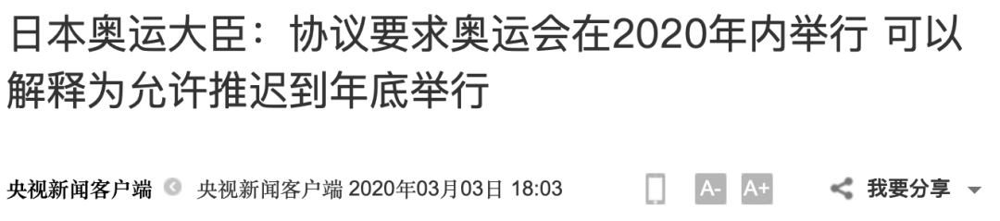

东京奥运会面临疫情困境：5月底或迎生死时限，延期易地办赛不现实
原文链接 备份链接 图片来源：视觉中国 记者：罗盈盈 “ 如果日本当地疫情在今年5月底无法得到有效控制，这届奥运会有可能会被取消。 ” 即使日本新冠肺炎疫情持续蔓延，当地官员、东京奥组委以及国际奥委会早前多次强调，东京奥运会准时举办。 但 …

据央视新闻，3日，就有关新冠肺炎疫情是否会导致今夏东京奥运会取消这一问题，日本奥运大臣桥本圣子公开表示，“协议要求奥运会在2020年内举行，这可以解释为允许推迟到年底举行。”
桥本圣子表示，根据相关协议，推迟或取消奥运会的权利归国际奥委会所有，日本政府和东京都正在尽全力让奥运会如期举行，即7月24日开幕。

图片来源：央视新闻
据日本放送协会（NHK）报道，截至当地时间2日晚20时，日本北海道、神奈川县、爱媛县等地新增15例新冠肺炎确诊病例，累计确诊达976例。确诊病例包括在日本国内的感染者和中国游客等257人，“钻石公主号”邮轮上乘客和乘务人员705人，以及日本政府包机回日14人。此外，累计死亡病例12例。
据海外网此前报道，日本首相安倍晋三在2月26日参加国会答辩时表示，“将全力确保东京奥运会的召开”。

“5月底可能成为作出最终决定的时限”
据参考消息3日消息，桥本圣子说，双方合同仅限定在2020年内举行奥运会，并未具体规定日期。根据合同，东京最晚可延期至今年年底前举行奥运会。
但她强调，日本政府和东京仍力争原定7月24日开幕的计划。
她表示，关于何时判断东京奥运会能否按时举办，目前尚无正式定论。但根据她的判断，5月底可能成为作出最终决定的时限。
她在发言中表示，根据最新测算，日本为东京奥运会投入的预算为1.35万亿日元（约合872亿人民币）。
根据奥运会的主办协议，取消奥运会的权利属于国际奥委会。国际奥委会主席巴赫在上周曾表示，尽管冠状病毒蔓延，但国际奥委会将“全力”确保东京奥运会如期举行。
曾讨论过禁止观众入场的方案
3月3日，据《每日邮报》报道，英国自行车运动协会主席斯蒂芬·帕克（Stephen Park）透露，国际奥委会、世界卫生组织和各大体育协会高层曾讨论过，在禁止观众入场的情况下举办东京奥运会的方案。
全球疫情在奥运前夕得不到有效控制，相较于取消赛事或易地办赛，闭门举办奥运会或许是另一个可行的方案。而且在所有应急备案中，空场比赛是代价相对较小的选择。
若奥运会选择空场进行，摄影团队可被允许入场进行电视转播，满足已经签署的高额转播合同。除了亏损门票销售收入以外，日本当局及国际奥委会的各方面损失能降到最低。
虽然空场比赛能够减少损失，但其弊端在于，运动员参赛本身也是一种聚集行为，无法完全规避感染风险。尤其对于选手来源较为复杂的国际性赛事来说，这一形式仍有冒险性。
目前，日本国内的J联赛已经延期，而相扑比赛则是空场举行，这还是1945年以来的首次，此外，日本职业棒球联赛也是空场进行。
国际奥委会发言人表示，“在做出任何明确决定前，奥运会组织者正在与世界卫生组织及日本一起监测局势的变化。”
安倍曾回应：将全力确保东京奥运会召开
据海外网援引外媒报道，2月26日，安倍参加了日本众议院预算委员会的集中审议。在回答日本国民民主党代表玉木雄一郎的问题时，安倍表示“作为政府，希望能在安心、安全的情况下，竭尽全力举办（这一赛事）”。
安倍还强调，“作为政府，我们将继续在IOC（国际奥委会）、大会组委会、东京都之间进行紧密的合作，为使运动员和观众获得安心、安全的大会，切实做好举办的准备”。
据了解，近日，国际奥委会委员迪克·庞德曾指出“如果三个月之后新冠肺炎疫情威胁不能消除，2020年东京奥运会可能取消”，这一言论也随即引爆国际舆论，成为各国关注焦点。国际奥委会方面也在随后做出回应，称国际奥委会正为东京奥运会如期成功举办而不断努力，除此之外，一切言论均属猜测。
针对庞德的言论，日本内阁官房长官菅义伟也在26日称，庞德的观点只代表其个人，不代表国际奥委会。东京奥运会将按计划如期举行。
按照此前计划，东京奥运会将于今年7月24日至8月9日举行。奥运火炬传递将从3月26日在日本福岛县第一核电站中转场所“J-village”正式开始，历时121天巡回日本47个都道府县，并在7月24日的开幕式上点燃东京新国立竞技场的火炬台。
来源：每日经济新闻综合央视新闻、参考消息、海外网、界面新闻


推荐阅读

点击大图 |富士康最难最贵“复工季”：北上广深部分中介获得返费高达17000元

点击大图 |出生45天婴儿确诊！韩专家称最坏情况是40%国民感染,，疫情或至年底！

原文链接 备份链接 图片来源：视觉中国 记者：罗盈盈 “ 如果日本当地疫情在今年5月底无法得到有效控制，这届奥运会有可能会被取消。 ” 即使日本新冠肺炎疫情持续蔓延，当地官员、东京奥组委以及国际奥委会早前多次强调，东京奥运会准时举办。 但 …
原文链接 备份链接 按照原计划，今年奥运圣火传递活动将在3月12日从希腊开始，3月26日来到日本，7月24日东京奥运会将开幕，这些安排会否受到影响，取决于日本政府对于疫情的控制 2020年2月15日，东京奥运会圣火传递大使石原里美（右）在 …
原文链接 备份链接 2月10日，日本东京，2020东京奥运会前瞻，奥运宣传标语亮相东京街头。图片来源：视觉中国 记者：高恺仪 “ 首例病逝确诊患者是一位80多岁的女性。鉴于在中国的经验，新冠肺炎病毒对有基础病的老年人造成的影响更大，老龄化 …
原文链接 备份链接 图片来源：视觉中国 记者：罗盈盈 “ 日本政府和东京奥组委依然致力于让奥运会如期举行。 ” 受全球疫情影响，东京奥运会能否如期举办的悬念仍在持续。 3月3日，据英国《每日邮报》报道，日本奥运大臣桥本圣子在回答一名议员关 …
原文链接 备份链接 来源：财联社 作者：史正丞 “ 据媒体报道，国际奥委会对于历届主办城市的投资大约在10亿美元上下，为此向保险公司投保约8亿美元保额，按照2-3%的保费来计算，IOC为东京奥运支付的保险费用最多不超过2400万美元。 ” …